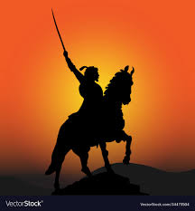

Early Life
Shivaji Maharaj was born on April 6, 1627 in the hill fort of Shivneri, near the city of Junnar in Pune district. He was the son of Shahaji Bhosale, a Maratha general who served the Deccan Sultanates, and Jijabai, the daughter of Lakhuji Jadhavrao of Sindhkhed. Shivaji Maharaj grew up in the hill forts of Sahyadri range.
Achievements
Shivaji Maharaj is known for his military and political achievements. Some of his notable achievements include:
- Establishment of the Maratha Empire
- Successful guerrilla warfare against the Mughal Empire
- Creation of a strong navy
- Development of a system of forts
- Encouragement of religious tolerance and protection of Hindu culture
Legacy
Shivaji Maharaj's legacy is one of bravery, leadership, and commitment to his people. He is revered as the founder of the Maratha Empire and a symbol of Hindu resistance against Muslim domination. His military tactics and strategies have been studied and admired by scholars and military leaders throughout the world. Today, Shivaji Maharaj is remembered and honored in many ways, including:
- Statues and monuments throughout India
- Books, films, and other cultural works inspired by his life
- The Indian Navy's first aircraft carrier, INS Vikrant, was renamed INS Vikrant (R11) in his honor in 2014
- Various educational institutions in India have been named after him